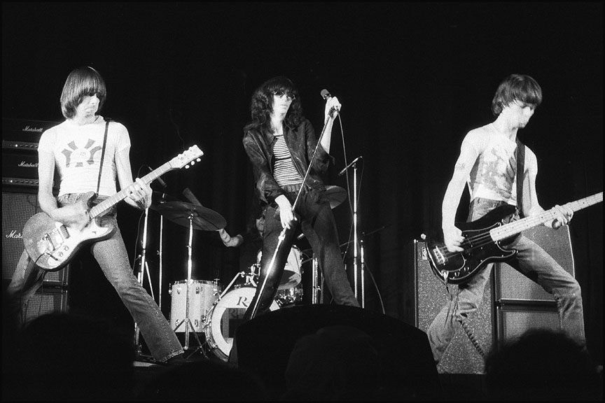

Punk rock (or simply "punk") is a rock music genre that developed in the early to mid-1970s in the United States, United Kingdom, and Australia. Rooted in 1960s garage rock and other forms of what is now known as "proto-punk" music, punk rock bands rejected perceived excesses of mainstream 1970s rock. Punk bands typically produced short or fast-paced songs, with hard-edged melodies and singing styles, stripped-down instrumentation, and often political, anti-establishment lyrics. Punk embraces a DIY ethic; many bands self-produce recordings and distribute them through informal channels.
The term "punk" was first used in relation to rock music by some American critics in the early 1970s, to describe garage bands and their devotees. By late 1976, bands such as The New York Dolls, Television and the Ramones in New York City, and the Sex Pistols, the Clash, and the Damned in London were recognized as the vanguard of a new musical movement. The following year saw punk rock spreading around the world, and it became a major cultural phenomenon in the United Kingdom. For the most part, punk took root in local scenes that tended to reject association with the mainstream. An associated punk subculture emerged, expressing youthful rebellion and characterized by distinctive styles of clothing and adornment.